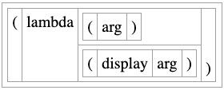
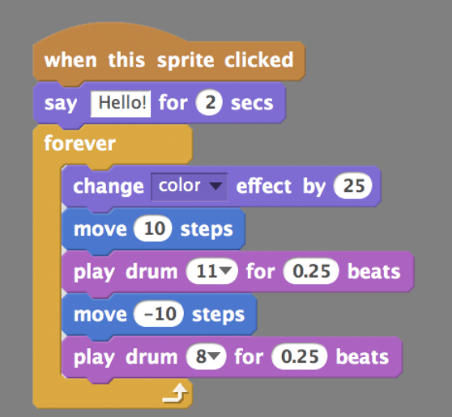

Demo #3: Zen visual
program editor
This demo shows a broken and very incomplete prototype of the Zen visual program editor.
It is here in its present broken state so that it can be shared for comment.
To try it out, drag blocks from the table of buttons into the light gray buffer to form a program.
Some forms should take arguments.
The equals (=) predicate form should take two or more arguments,
but presently it will accept only one or two.
Each button represents a Scheme language form or datum.
Different forms take different numbers of arguments.
Many forms take a variable number of arguments.
#t and #f are datums (true and false in Scheme language).
Click 'Run your program' to run the program.
Any output will be shown in the JavaScript console.
To understand what the Zen visual program editor is doing and how it will be developed,
please refer to the embedded code, written in Scheme for the
Biwascheme implementation of
the Scheme programming language.
The eventual development goal of the Zen visual program editor is to allow even a beginning programmer to create useful web applications by adding and interacting with program blocks. There were two inspirations for this:
- the form diagramming of jsScheme, and
- the Snap! programming language for kids and adults.

Here is an example program in Snap!:
